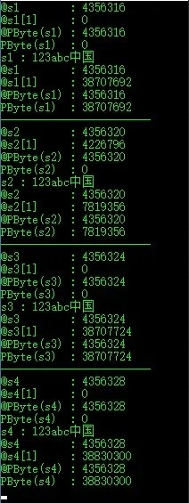

从其它平台迁移而来
闲来无事，又开始扒拉起Delphi的源码，这次发现一个比较有意思的函数StringCodePage，作用是返回传入字符串的CodePage。至于什么是CodePage，暂且认为是字符编码吧。
先测试一把：
|
|
来看下是怎么实现的：
|
|
原来字符串首地址逆向偏移12个字节所存放的Word型数据就是该字符串的CodePage信息。注释里出现了一个StrRec，看一下是何方神圣：
|
|
两个Word两个Integer刚好12B，那就看下所有字节吧：
|
|
查一下各个字符的编码备用：123abc的ASCII码就不必说了；中的GBK编码D6D0,Unicode编码4E2D，UTF-8编码E4B8AD；国的GBK编码B9FA,Unicode编码56FD，UTF-8编码E59BBD。
先看s1，codePage：A8 03，elemSize：01 00，refCnt：01 00 00 00，length：0A 00 00 00，字符串内容：31 32 33 61 62 63 D6 D0 B9 FA。
字符串内容比较好理解，与具体编码也都一一对上了，但是其它的又是怎么回事呢？用PWord和PInteger去取的话又是没问题的啊！其实是编译器大端、小端的问题，至于大小端问题这里不讨论，知道这里用的是小端就可以了。
按小端来解析s1，codePage：03 A8=936，elemSize：00 01=1，refCnt：00 00 00 01=1，length：00 00 00 0A=10。
s2就比较头大了，前8个字节总是变来变去，length：00 00 00 10=16，字符串内容按小端来解析也是没问题的。
其中有这样一段代码：
|
|
意思是说求WideString的长度时，windows平台下还需要右移一位，其实就是除以2。
s3，codePage：FD E9=65001，elemSize：00 01=1，refCnt：00 00 00 01=1，length：00 00 00 0C=12，字符串内容与UTF-8编码一致。
s4按小端来解析，codePage：04 B0=1200，elemSize：00 02=2，refCnt：00 00 00 01=1，length：00 00 00 08=8，字符串内容UCS-2LE编码一致。
这里发现一个重大问题：WideString和UnicodeString虽然在内容上一样，但具体实现却是不同的。
|
|
结果如图，不多解释了。
